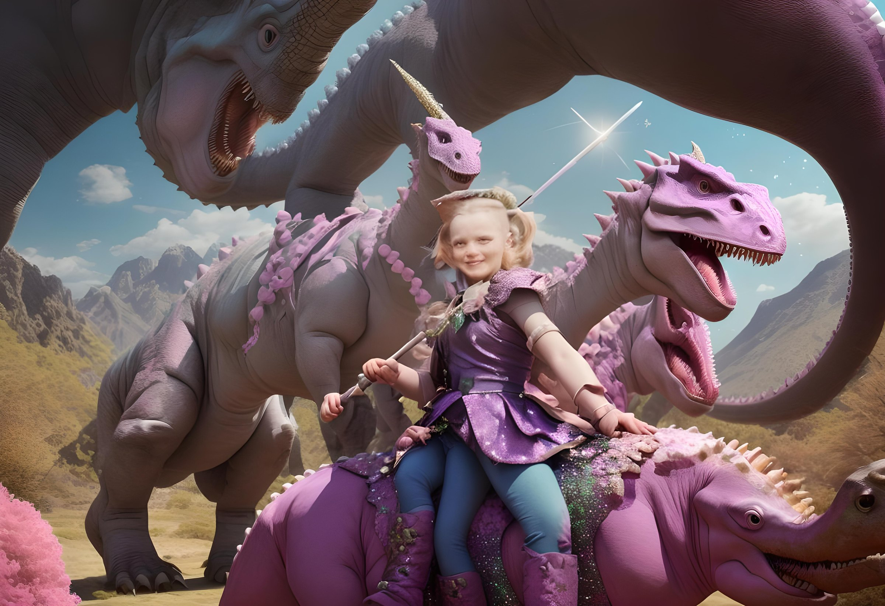
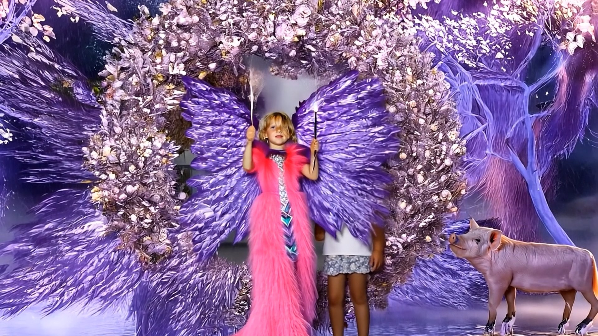
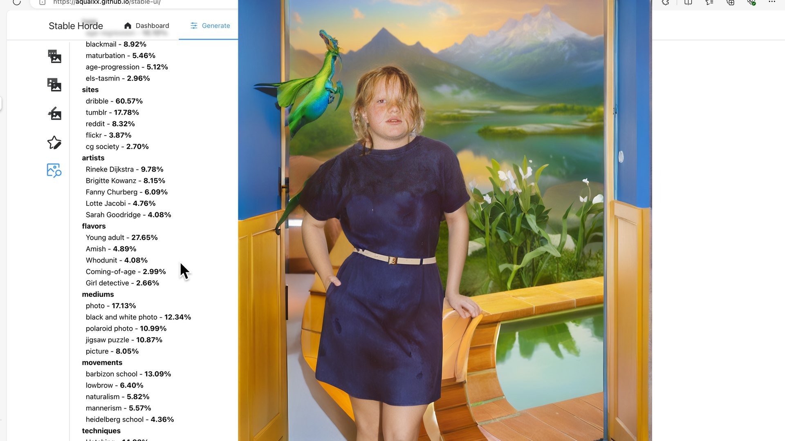
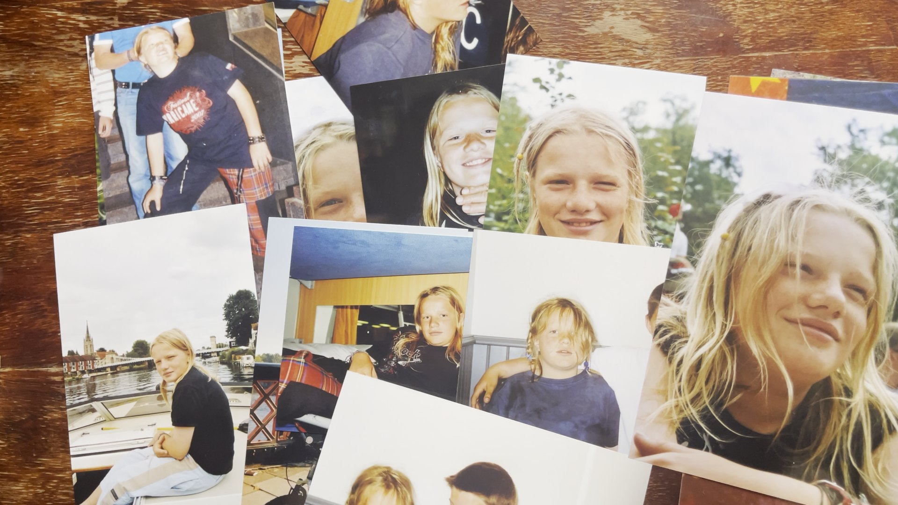
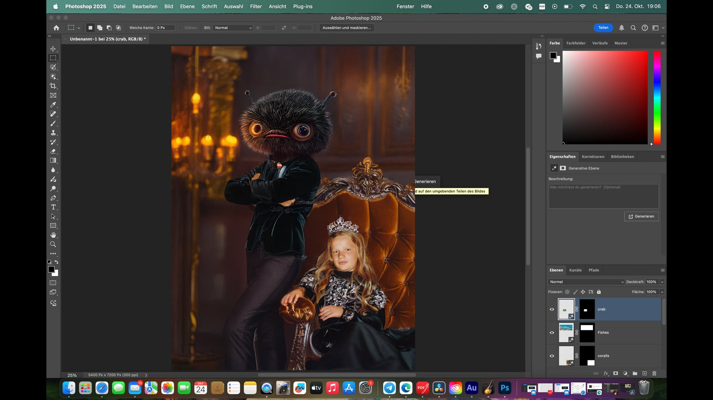
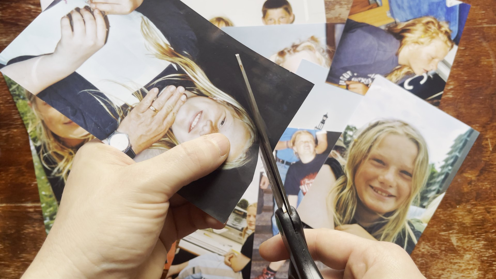
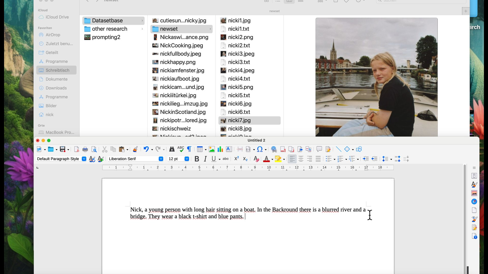
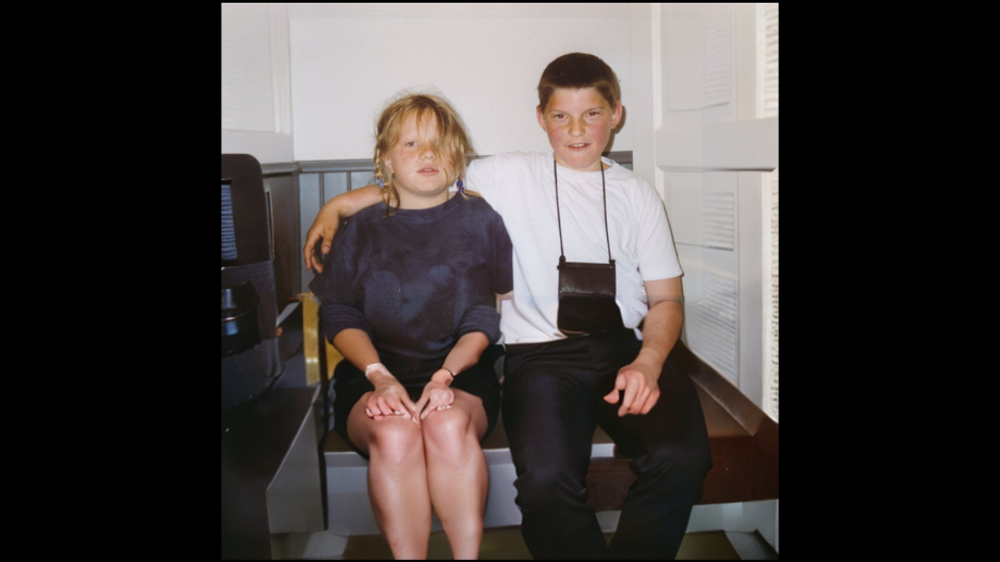
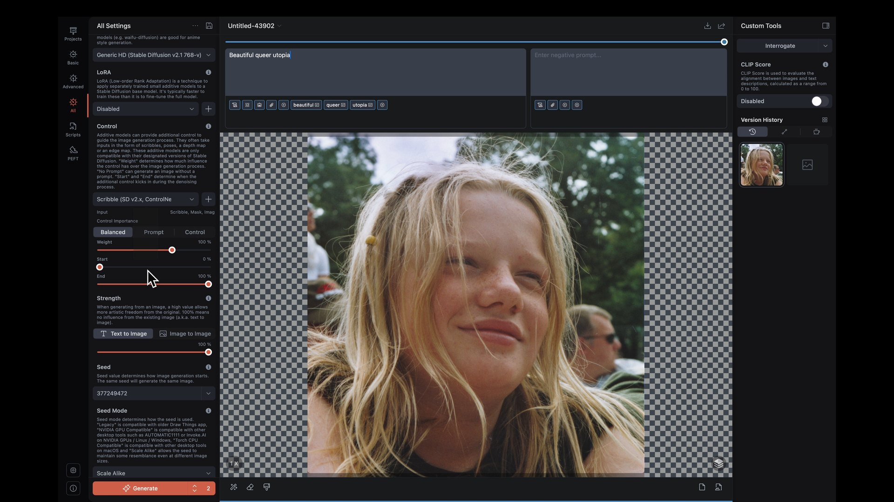
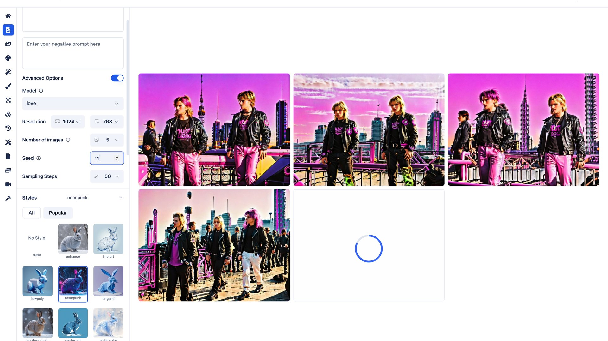

CyberCindy
2025 · Single-channel video
CyberCindy is a single-channel video by Nickii Schamborski, 2025. Shown at Voltaje Festival (2025); Open Studios (2025); AT/SP x Ars Electronica Campus Exhibition (2026); More than Meets AI (artists in disguise) (2026).










About the work
Starting as a simple tutorial, this film follows Cyber Cindy's journey to reimagine their childhood through AI, crafting visions of queer belonging and freedom beyond rigid gender norms. While exploring and questioning their own queer desires through technology, they expose AI's role as a contemporary oracle, a system that claims omniscience while concealing its military origins and economic interests. Challenging both the faith placed in AI and its perpetuation of structural hierarchies, the film reveals how technological systems not only struggle with complex identities, but actively reinforce power structures and conceal their roots in military development and their profit-driven agendas.
Zur Arbeit
Der Film beginnt mit einem einfachen Tutorial und folgt Cyber Cindy auf einer Reise, um die eigene Kindheit durch KI neu zu erfinden und dabei Visionen von queerer Zugehörigkeit und Freiheit jenseits starrer Geschlechternormen zu entwickeln. Während they mit Hilfe der Technologie ihre eigenen queeren Sehnsüchte erforschen und hinterfragen, entlarven they die Rolle der KI als zeitgenössisches Orakel - ein System, das Allwissenheit vorgibt und gleichzeitig seine militärischen Ursprünge und wirtschaftlichen Interessen verbirgt. Der Film hinterfragt sowohl den Glauben an KI als auch ihre Aufrechterhaltung von strukturellen Hierarchien und zeigt, wie technologische Systeme nicht nur mit komplexen Identitäten zu kämpfen haben, sondern auch aktiv Machtstrukturen verstärken und ihre Wurzeln in der militärischen Entwicklung und ihren profitorientierten Agenden kaschieren.
Details
- Year
- 2025
- Type
- Single-channel video
- Specs
- HD, stereo sound, 07:42 min, English
- Direction
- Nickii Schamborski
- Camera
- Nickii Schamborski
- Editing
- Nickii Schamborski
Shown at
- Voltaje Festival, Bogotá, Colombia (2025)
- Open Studios, School of the Art Institute of Chicago (2025)
- AT/SP x Ars Electronica Campus Exhibition, Ars Electronica, Linz, Austria (2026)
- More than Meets AI (artists in disguise), The Flats at East-West University, Chicago (2026)